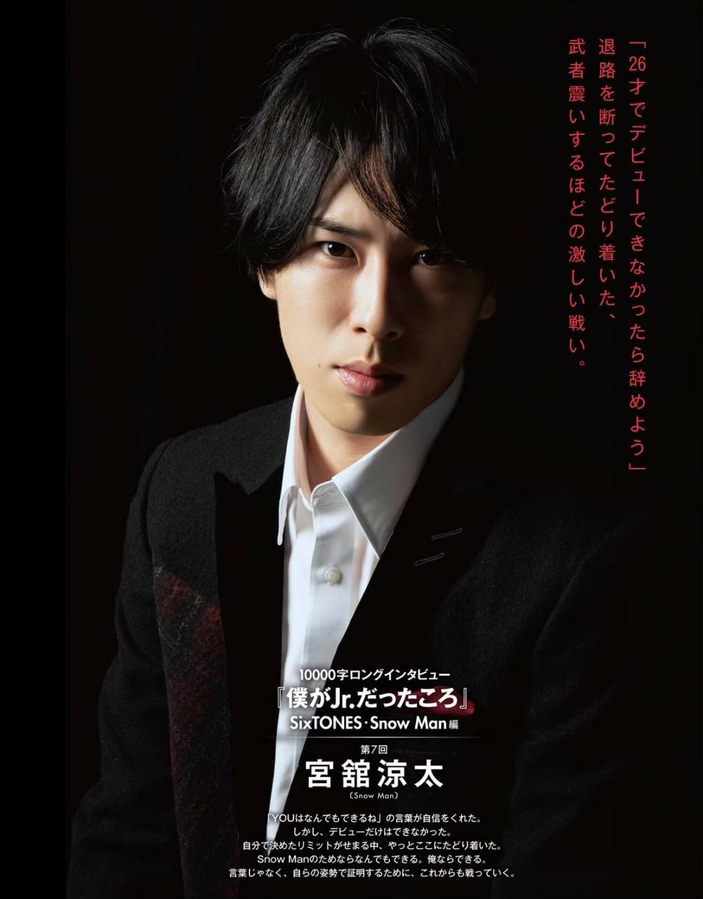
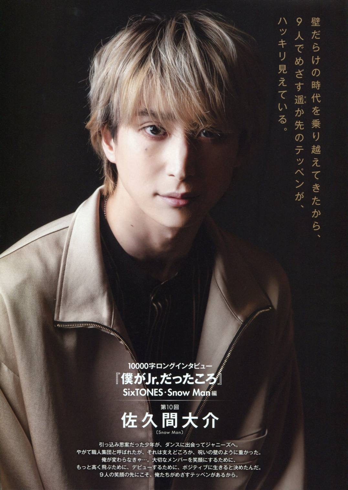
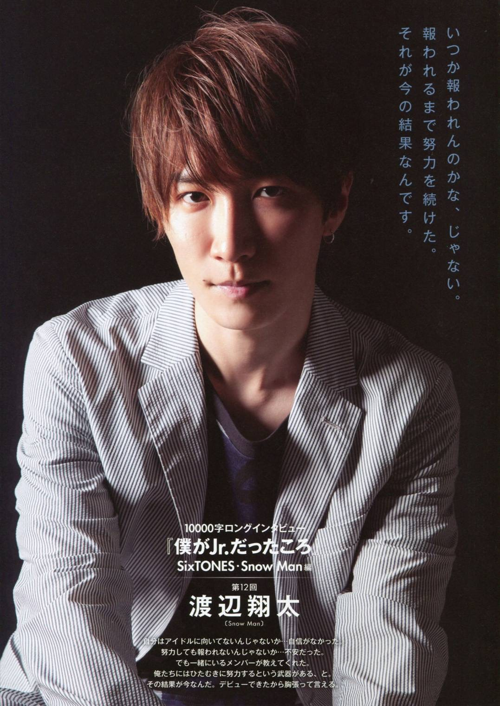
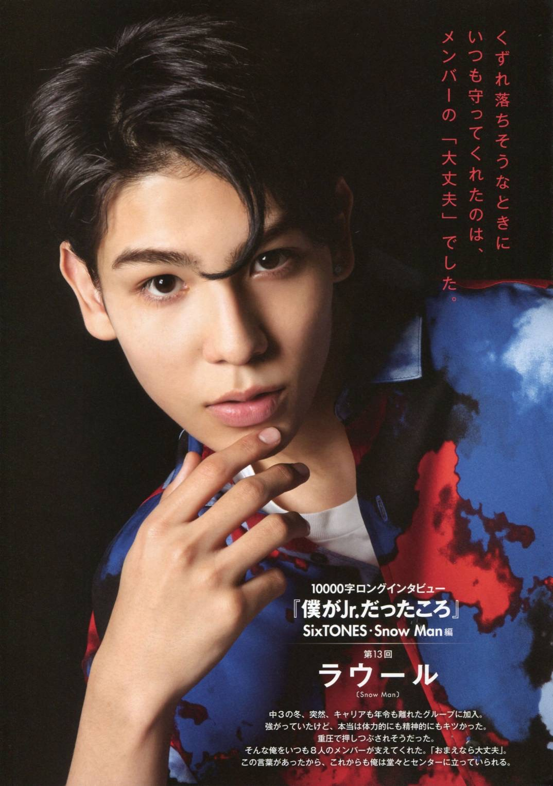
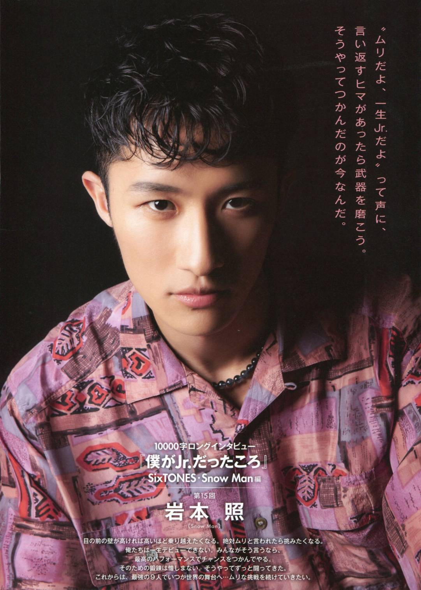

萬言書『我的Jr.時期』 2020年6月 Myojo 深澤辰哉 總是用笑容歡送陸續出道的同期和後輩, 終於,他也來到了這一刻。 以最長Jr.資歷這個記錄迎接CD出道。 那些辛苦的日子、那一天的淚水,終於,都得到了回報。 一個人絕對無法實現,直到抓住夢想那一天的故事。 MORE
萬言書『我的Jr.時期』 2020年11月 Myojo 阿部亮平 相信著「唯有化悲憤為力量者才能更往上躍進」。 入手「傑尼斯史上第一位碩士學歷偶像」這樣的武器。 為了回報當初被自己添麻煩的團員們、 今後也會繼續全力以赴地追尋正確答案。 MORE
萬言書『我的Jr.時期』 2020年12月 Myojo 向井康二 機會多次由他的掌間流失。 從關西Jr.領隊般的存在轉為加入Snow Man。 衝擊力道如此強勁的決斷、意味著與重要的人們和場所的告別。 即便如此、也是因為有過去的那些日子才能與無可取代的團員們相遇。 滿懷著向所有人說聲「謝謝」的心情。 MORE
 萬言書『我的Jr.時期』 2021年1月 Myojo 宮館涼太 「YOU什麼都辦得到呢」這句話給予了自信。 但是、唯獨出道這件事無法辦到。 就在自己設定的期限迫近的前一刻、才好不容易達成。 為了Snow Man我什麼都做得到、沒有我做不到的事。 不只言語、為了用行動證明、今後也會繼續戰鬥下去。 MORE
萬言書『我的Jr.時期』 2021年3月 Myojo 目黑蓮 沒機會拿麥、沒有所屬團體、甚至被說過「不需要你」 經歷了懷才不遇的時期、2019年被拔擢成為Snow Man的一員。 想跟當年曾想過要退社的自己說: 「曾經無論怎麼祈願都難以實現的夢、現在、我正活在那裡面。」 MORE
 萬言書『我的Jr.時期』 2021年4月 Myojo 佐久間大介 個性內向的少年、與舞蹈相遇並進入了傑尼斯。 好不容易成為眾人所稱的職人團體、但這非但不是助力、反而成為詛咒之牆般的沉重。 我非改變不可...為了使重要的團員們能嶄露笑顏、 為了能飛得更高、為了出道、決心要活得積極正面。 因為我們所目標的第一、就在9人笑容的前方。 MORE
 萬言書『我的Jr.時期』 2021年6月 Myojo 渡邊翔太 我不適合當偶像吧...曾如此缺乏自信過。 就算努力也得不到回報吧...也曾如此不安過。 但是團員們教了我這件事:「我們擁有努力不懈這項武器」。 於是結果就是現在。因為出道了所以我能抬頭挺胸地這麼說。 MORE
 萬言書『我的Jr.時期』 2021年7月 Myojo Raul 中學三年級的冬天、突然間加入資歷和年齡相差一大截的團體裡。 雖然逞強著、但其實體力和精神上都很吃不消。 幾乎快要被沉重的壓力擠碎。 而支持著這樣的我的是8位團員們。「你一定沒問題的」。 因為有了這句話,我才能抬頭挺胸地站在Center。 MORE
 萬言書『我的Jr.時期』 2021年9月 Myojo 岩本照 聳立在眼前的牆愈高就愈想要攀越它。 被別人說「你絕對辦不到」,就更加想要去挑戰。 我們一輩子都出不了道。既然大家都這麼說、 那就更要用最棒的表演去抓住機會(出道)給你們看。 為此多麼辛苦的鍛煉都在所不惜，我就是這麼一直戰鬥過來的。 今後、我們這最強的9人為了站上世界的舞臺,會繼續挑戰著更多不可能的任務。 MORE